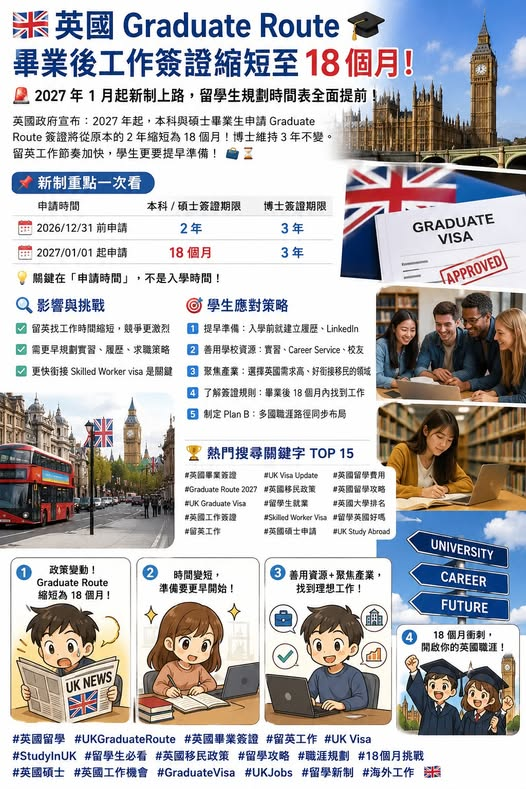

《看懂制度，選對世界》第一集
英國留學重大變化：畢業後工作簽證縮短至 18 個月
根據英國政府官方 Graduate visa 頁面，目前英國本科與碩士畢業生，若在 2026年12月31日以前申請，仍可取得 2年 Graduate visa；

【 重大變化：畢業後工作簽證縮短至18個月 】 根據英國政府官方 Graduate visa 頁面，目前英國本科與碩士畢業生，若在 2026年12月31日以前申請，仍可取得 2年 Graduate visa；若在 2027年1月1日以後申請，簽證時間將改為 18個月。博士或其他博士層級資格，仍維持 3年。. 「畢業後找工作」的時間壓縮。以前到英國讀書，畢業後有兩年時間慢慢找實習、找工作、累積履歷。
但從2027年起，這段時間縮為18個月後，學生需要更早開始準備： 英文履歷 LinkedIn 實習申請 產業方向 雇主贊助簽證 Skilled Worker visa 銜接 英國留學，已經進入「升學＋就業」一起規劃的時代。. 希望學生更快進入職場，並銜接正式工作簽證。這是一個很重要的留學訊號： 學歷仍重要 就業準備更重要 科系選擇要和職涯方向連在一起 . ⏳ 18個月，看起來差半年，影響其實很大 以英國一年制碩士為例，學生通常9月入學，課程時間緊湊，短時間內要完成上課、作業、論文、找實習、投履歷、面試。
如果學生到畢業後才開始準備求職，18個月很快就會被消耗掉。尤其想留英工作的學生，最後通常還要面對 Skilled Worker visa 的門檻，也就是需要找到符合條件、願意提供工作簽證贊助的雇主。. 選校邏輯要改：排名之外，要看就業資源 過去很多家庭選英國大學，第一個看排名。
現在更應該一起看： 1 學校是否有 placement year 2 科系是否有企業專案 3 Career service 是否積極 4 畢業生是否容易進入目標產業 5 城市是否有足夠工作機會 6 該專業是否常見 Skilled Worker visa 職缺 舉例來說，商科學生要看金融、行銷、供應鏈、數據分析的實習機會。設計學生要看作品集、展覽、業界合作。工程與資工學生要看產業聚落、雇主合作、實作專案。藝術、人文與社會科學學生，則要提早設計跨領域能力，例如教育、媒體、政策、內容、AI工具應用。
現在更重要的問題是： 「這個科系能帶我走向哪一種產業？」 「這所學校能提供哪些職涯資源？」 「我畢業後18個月內，有機會進入目標工作嗎？」 「如果留英工作未達成，是否有台灣、加拿大、澳洲、新加坡、歐洲等備案？」 這才是2026年後英國留學規劃的重點。. 留學已經非單純拿文憑。它更像是一場人生策略配置：學歷、語言、職場、人脈、城市、產業，都要一起考量。